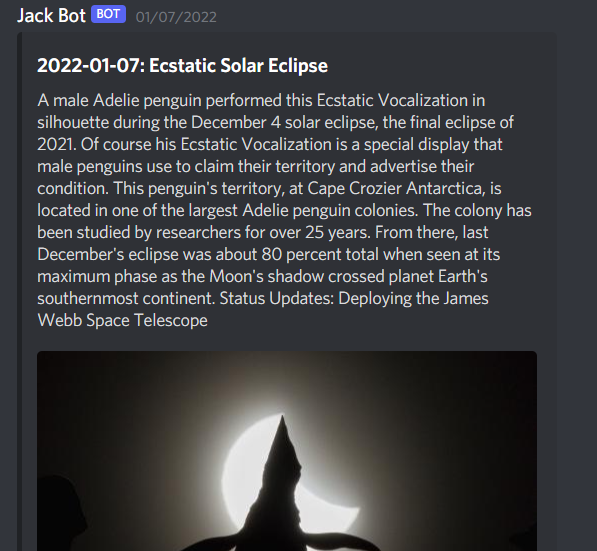
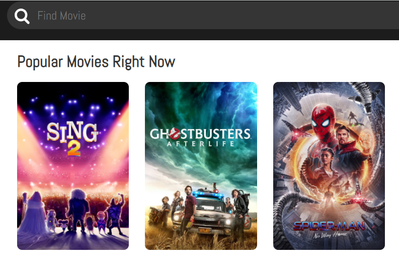

Hey, I'm David Dong!
And you're on my website! If you didn't know, I am currently a student at Rutgers University majoring in Computer Science and Physics. I chose these majors because I love learning new things and what better things to learn then computer science which is everywhere and physics which is everything!
This website was primarily made to chornicle my past projects and show them off. I will give a basic summary of each one and go into detail about the process and what I learned. After all my projects, I will also talk a little bit about my clubs and hobbies. I hope you enjoy!
Some resources so you can link up with me:
Projects
Here, I will account all my previous projects. I will go over the software/languages/libraries/etc that I used and give a summary of the final product. I will also go in depth about what I learned and what I struggled with.
Text Pop
Text Pop was a game I made using Unity and C#. The goal of the game is to avoid obstacles by moving your mouse to control the player and pressing keys to pop incoming hazards. (The guide to the gameplay is in one of the images above). The game features multiple difficulty levels and a high score system for all three difficulties. The longer you survive the more points you get!
My goal for Text Pop was to create a game that I could solely make myself. The biggest challenge was to find a way to make the game look visually appealing without hiring an artist. Initially, the game looked very bland as all the hazards were just a dull gray color and when I added different colors to the hazards, it then looked too confusing and random. Eventually, I realized I could use linear interpolation and associate an rgb value with an aspect of the game such as time, key, and hazard speed to give all the hazards a unique look that actually relates to the gameplay. This not only made the game look significantly better, but also provides the player visual cues to make gameplay cleaner.
The Github repository of the game is here.
Discord Bot


Personal Website
 One of the projects I have worked on is the one you are using right now and it is this website! I wanted to create something that could help show myself and my projects off and a website seemed like the best way to do so. This personal website was made using HTML, CSS, and Javascript and is hosted on Github pages.
The most difficult part of this project is actually just learning the languages necessary to build it. I had some minor experience building websites from classes I took in high school but the process essentially required me to relearn everything. However, while learning everything was the most challenging part, the most time consuming part was learning what I wanted this website to be and what I wanted it to look like. I believe I went through at least five different iterations on how I wanted it to look. I also wanted to feature a lot more projects that I worked on but sadly had to get rid of them as to not bombard you with subpar projects.
However! Some of those subpar projects are public on my Github so you can view them there as well as viewing the Github repository of this website here.
One of the projects I have worked on is the one you are using right now and it is this website! I wanted to create something that could help show myself and my projects off and a website seemed like the best way to do so. This personal website was made using HTML, CSS, and Javascript and is hosted on Github pages.
The most difficult part of this project is actually just learning the languages necessary to build it. I had some minor experience building websites from classes I took in high school but the process essentially required me to relearn everything. However, while learning everything was the most challenging part, the most time consuming part was learning what I wanted this website to be and what I wanted it to look like. I believe I went through at least five different iterations on how I wanted it to look. I also wanted to feature a lot more projects that I worked on but sadly had to get rid of them as to not bombard you with subpar projects.
However! Some of those subpar projects are public on my Github so you can view them there as well as viewing the Github repository of this website here.
React Movie Website

It was around when I realized how to work with APIs using the Discord bot that I wanted to build an application that delved deeper into API usage. Furthermore, I also wanted to learn how to use React as I heard it was one of the best ways to build websites. Therefore, to kill two birds with one stone, I built a website that allows the user to see the most popular movies at the time. The user can also delve deeper into those popular movies or search up some of their own to see the runtime, budget, revenue, and cast for each movie. Aforementioned, the website was built using React, Javascript, TMDB, and is hosted on Netlify. To make sure I was not just learning random shenanigans this website was built following the FreeCodeCamp React course.
This project was another large endeavor as I had to learn a lot about everything. React is a whole another beast and throughout the process I learned a significant amount about hooks, components, local/session storage, and etc. I even taught myself how to use Postman so I could better keep track of the API and how to utilize it properly. Overall, it was a very satisfying project to work on but what is a website that you can't show off?
In order to make sure it was a fully realized project I used Netlify in order to host the website and you can access it here. Also, as per usual, you can access the Github repository of the website here.
❮
❯
Clubs
Here, I'll go over the relevant clubs I attend at Rutgers University! I will give a short description of the club then go over a project I worked on in each club.
COGS
 COGS, or the Creation of Games Society, is a club focused on creating a community where artists, musicians, game designers, and programmers can come together to create video games. Members usually work on one big project throughout the semester while sometimes there are events such as Game Jams or Firesides where people can be challenged to create games with certain themes or rules.
For example, for the 2021 Scarlet Knights Game Jam, we had one week to create a game surrounding the theme of jam and had to create the project using Unity and C#. To follow the theme, my team decided that it would be fun to create a platformer where we have two players with different abilities. One player could jam out with a guitar and send sound waves while the other player could throw jam to create terrain that could bounce players, enemies, and sound waves. The focus of the game was to create fun and unique puzzles that could only be solved by having both players use their abilities cooperatively. This event was very challenging but also a ton of fun and I learned a significant amount about working with different people with different skillsets.
If you want to learn more about Jammin' Jelly, the Github repository of the game is here.
COGS, or the Creation of Games Society, is a club focused on creating a community where artists, musicians, game designers, and programmers can come together to create video games. Members usually work on one big project throughout the semester while sometimes there are events such as Game Jams or Firesides where people can be challenged to create games with certain themes or rules.
For example, for the 2021 Scarlet Knights Game Jam, we had one week to create a game surrounding the theme of jam and had to create the project using Unity and C#. To follow the theme, my team decided that it would be fun to create a platformer where we have two players with different abilities. One player could jam out with a guitar and send sound waves while the other player could throw jam to create terrain that could bounce players, enemies, and sound waves. The focus of the game was to create fun and unique puzzles that could only be solved by having both players use their abilities cooperatively. This event was very challenging but also a ton of fun and I learned a significant amount about working with different people with different skillsets.
If you want to learn more about Jammin' Jelly, the Github repository of the game is here.
Blueprint
 Blueprint seeks to promote innovation and creativity by bringing together groups of product managers, designers, and engineers to build products. Groups are student led and focus on creating one application throughout a semester/school year.
For example, a project I worked on with another engineer was a cooking quiz app. The quiz was made in Java using Android Studio and was essentially a small app that you would answer cooking questions with. It featured questions like
Blueprint seeks to promote innovation and creativity by bringing together groups of product managers, designers, and engineers to build products. Groups are student led and focus on creating one application throughout a semester/school year.
For example, a project I worked on with another engineer was a cooking quiz app. The quiz was made in Java using Android Studio and was essentially a small app that you would answer cooking questions with. It featured questions like What is the world's most expensive spice?
(as of 2021 - saffron) and would keep track how many questions the user answered correctly. This app was actually the first time I worked simultaneously with another programmer using Github and I learned how to more effectively program with a partner.
If you want to learn more about the cooking quiz, the Github repository of the app is here.
Hobbies
Here, I'll go over the things I do for fun!
Gardening
 I recently got very into indoor gardening! I found that taking care of a plant and watching it grow and prosper feels incredibly rewarding and satisfying. While I have the do and don'ts of indoor gardening down, I know I still have a lot more to learn about individual plant life and want to start gardening outside. At the moment, I have a boston fern, a crispy wave fern, a basil plant, and a money tree plant but I look forward to branching out and finding new kinds of plants to take care of.
I recently got very into indoor gardening! I found that taking care of a plant and watching it grow and prosper feels incredibly rewarding and satisfying. While I have the do and don'ts of indoor gardening down, I know I still have a lot more to learn about individual plant life and want to start gardening outside. At the moment, I have a boston fern, a crispy wave fern, a basil plant, and a money tree plant but I look forward to branching out and finding new kinds of plants to take care of.
Reading
 I have always loved reading since I was a little kid and try to find time to read a few pages everyday. I love fiction and true crime but every once in a while, I pick up a self help book to try and learn a new skill/topic. Some of my favorite books are the Artemis Fowl series (Eoin Colfer), In Cold Blood (Truman Capote), Sofia Petrovna (Lydia Chukovskaya), and Mythology (Edith Hamilton). I am currently reading The Witcher series (Andrzej Sapkowski) and have just moved onto The Tower of the Swallow.
I have always loved reading since I was a little kid and try to find time to read a few pages everyday. I love fiction and true crime but every once in a while, I pick up a self help book to try and learn a new skill/topic. Some of my favorite books are the Artemis Fowl series (Eoin Colfer), In Cold Blood (Truman Capote), Sofia Petrovna (Lydia Chukovskaya), and Mythology (Edith Hamilton). I am currently reading The Witcher series (Andrzej Sapkowski) and have just moved onto The Tower of the Swallow.
Gaming
 A very popular hobby nowadays, I love playing video games with friends in my free time. The game I have predominantly been playing almost my entire life is League of Legends as I find the strategy and teamplay exhilarating and look up to Riot Games as an incredible company. I also look up to Klei Entertainment for their game, Don't Starve Together, that I enjoyed so much that I even made mods like unlocking seasonal content and changing the look of creatures in order to refine gameplay to my personal liking.
A very popular hobby nowadays, I love playing video games with friends in my free time. The game I have predominantly been playing almost my entire life is League of Legends as I find the strategy and teamplay exhilarating and look up to Riot Games as an incredible company. I also look up to Klei Entertainment for their game, Don't Starve Together, that I enjoyed so much that I even made mods like unlocking seasonal content and changing the look of creatures in order to refine gameplay to my personal liking.